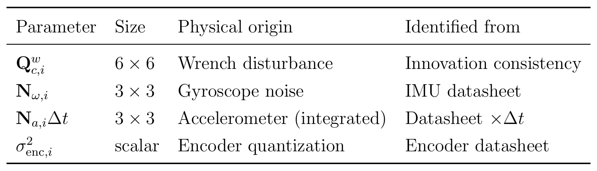

用于串联刚体机械臂惯性-编码器状态估计的 SE(3) 不变随机滤波Invariant Stochastic Filtering on SE(3) for Inertial-Encoder State Estimation of Serial Rigid Manipulators
虽非移动机器人 SLAM，但 Lie group filtering、IMU/encoder 状态估计和协方差传播对机器人融合估计有方法价值。
一句话工作总结
把机械臂 inertial-encoder 状态估计放到 SE(3) invariant filtering 框架下，并给出模块化稳定性分析。
摘要
论文为任意 link 数串联刚体机械臂提出完全在 Lie group SE(3) 上构造的 invariant extended Kalman filter。Group-affine 运动学使线性化误差动力学自治，从而 Riccati 方程描述真实误差协方差而不只是局部近似。噪声模型分别处理陀螺仪和加速度计：加速度计通过重力补偿积分给出平移 twist，并让测量协方差随采样间隔缩放；另有 state-dependent Coriolis noise 描述陀螺噪声经非线性动力学传播。滤波器由 per-link IEKF 模块化串接，复杂度随 link 数线性增长，并给出均方指数最终有界证明。
An invariant extended Kalman filter (IEKF) is developed for state estimation of serial rigid manipulators with an arbitrary number of links, formulated entirely within the Lie group SE(3). The group-affine property of the kinematic equations makes the linearised error dynamics autonomous, so the Riccati equation governs the true error covariance rather than a local approximation. A physically separated noise model treats gyroscope and accelerometer channels independently: the accelerometer provides translational twist via gravity-compensated integration, yielding a measurement covariance that scales with the sample interval in exact analogy with process noise discretisation; a state-dependent Coriolis noise term captures gyroscope noise propagating through the nonlinear dynamics, vanishing at rest and growing with twist magnitude. The filter is structured as a modular chain of per-link IEKFs in which the predicted covariance of each link depends on its predecessor only through the Adjoint-transformed posterior, giving linear computational cost in link count. Exponential ultimate boundedness in mean square is established via a Lie algebra Lyapunov function, with per-link bounds chained through the Adjoint operator norm to yield a stability certificate that is modular and scalable to arbitrary chain length. Numerical results validate the design.
中文解读摘录
- 为什么看：虽然对象是串联刚体机械臂，不是移动机器人 SLAM，但 Lie group IEKF、SE(3) 误差建模、IMU/encoder 状态估计和均方有界稳定性分析都与机器人状态估计方法论相关。
- 方法要点：把每个 link 的估计都放在 SE(3) 上；利用 group-affine kinematics 让线性化误差动力学自治；分别建模陀螺仪和加速度计噪声，并加入随 twist 增长的 state-dependent Coriolis noise；模块化地串接 per-link IEKF，使计算复杂度随 link 数线性增长。
- 结果信号：作者给出基于 Lie algebra Lyapunov function 的 exponential ultimate boundedness in mean square，并用数值实验验证。
- 跟踪建议：可借鉴其 invariant filtering 和 Adjoint covariance propagation；若做 IMU/encoder/关节状态紧耦合，值得细读噪声离散化与稳定性证明。
- 链接：abs · PDF
图表/页面预览
{kind=link}
